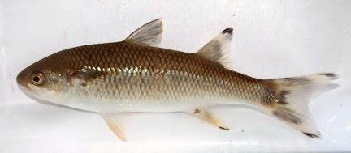

Mountain Mullet

[Dajao, Trucha, Lisa, Lise de Rio (Spanish); Tepemechín (Costa Rica);
Dajaus monticola syn Agonostomus monticola]
While most Mullets are salt water fish, this one spends its adult life in
fresh water - juveniles are sometimes found in brackish waters. It is found
in rivers from sea level to over 2000 feet, from North Carolina around the
Gulf of Mexico to Venezuela, and on the Islands of the Caribbean. It can grow
to 14 inches and is a non commercial subsistence catch. IUCN Red List LC
(Least Concern), but overfished in Costa Rica.
Photo by Luisfgarciaf licensed under Creative Commons
Attribution-ShareAlike v3.0 Unported.
More on Mullets.
General:
This fish is considered a delicacy in Jamaica and
is quite popular in Costa Rica. Its main problem is lots of small bones.
This mullet is very much like the Gray
Mullet, so that page should be valid for preparing this fish,
though the flavor will be a bit different.
Cooking:
In Jamaica, this fish is often wrapped in buttered
paper and fried, to be sent to the table in the paper. It can also be fried
plain or poached. Mullet doesn't hold together well in wet cooking such as
soups or stews.
sf_mullmtnz 221210 - www.clovegarden.com
©Andrew Grygus - agryg@clovegaden.com - Photos on this
page not otherwise credited are © cg1 -
Linking to and non-commercial use of this page permitted